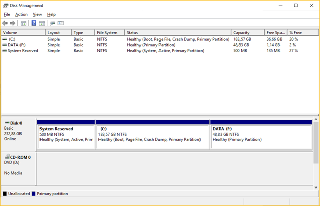

Partitioneren
Als we informatie opslaan op de harde schijf dan moeten we deze op een bepaald moment terug kunnen uitlezen. Om die reden is het belangrijk dat we bijhouden waar we die informatie gezet hebben.
Een harde schijf moeten we, voor we ze kunnen gebruiken, partitioneren.
Partitioneren is het verdelen van een harde schijf in verschillende partities. Een partitie is een stuk aaneengesloten opslagruimte op een opslagmedium zoals een harde schijf of USB stick. Op die manier kan één fysiek opslagmedium gebruikt worden, alsof ze uit meerdere opslagmedia bestaat.
De naam 'partitie' is de gebruikelijke aanduiding bij de diverse versies van de Windows en Linux besturingssystemen. Soms wordt echter ook volume of slice gebruikt.
Partitioneren spreek je uit als par-ti-sjo-nee-ren, met de klemtoon op nee. De letters tio klinken daarin als sjo, net zoals in conditioneren en functioneren. Wat je vaak hoort is par-ti-ti-o-neren, waarbij die drie letters een voor een gelezen worden, en dat is niet juist.
Op een opslagmedium moet er altijd minstens 1 partitie aanwezig zijn.
Hoe die partities op het opslagmedium bijgehouden worden, ligt vast in het partitieschema. Er zijn er twee. Het oudste heet MBR, naar het master boot record waarin de tabel staat.
Dat master boot record is de eerste sector van de schijf en is dus 512 bytes groot. Daarvan zijn 440 bytes opstartcode en 64 bytes de partitietabel zelf. In die 64 bytes passen vier beschrijvingen van 16 bytes, en dat is de bekendste grens van dit schema: vier partities, niet meer.

Een tweede grens zit in de manier waarop MBR een sector aanduidt. Het gebruikt daarvoor 32 bits, dus 2^32 sectoren van 512 bytes, en dat komt neer op ongeveer 2 TB. Een schijf die groter is, kan je met MBR niet volledig indelen.
Het MBR schema kent daarbij drie soorten partities. Een primaire partitie neemt een van de vier tabelplaatsen in en draagt een bestandssysteem. Wil je er meer dan vier, dan geef je een van die plaatsen aan een extended partitie: die draagt zelf geen bestandssysteem maar dient als houder waarin je zoveel logische partities aanmaakt als je nodig hebt.

Het nieuwere partitieschema heet GPT, voluit GUID Partition Table. Het hoort bij UEFI, voluit Unified Extensible Firmware Interface, de firmware die het BIOS opvolgt en die je in het hoofdstuk BIOS / UEFI bent tegengekomen. GPT heeft plaats voor 128 partities en kent de grens van 2 TB niet, want het gebruikt veel meer bits om een sector aan te duiden. Het onderscheid tussen primaire, extended en logische partities bestaat er niet, want de 128 plaatsen zijn aan elkaar gelijk.

Als je een moderne versie van Windows installeert is er vaak één zichtbare partitie genaamd C:\ aangevuld met één of meerdere onzichtbare systeemgereserveerde partities zoals bijvoorbeeld de UEFI partitie. De onzichtbare partities hebben vaak als doel om eenvoudig een systeemherstel te kunnen uitvoeren of bevatten een bootloader.
De maximale grootte van een partitie wordt bepaald door het gebruikte bestandssysteem zoals FAT32, NTFS of ext4. Verderop in dit hoofdstuk kom je hierover meer te weten.
Als je eens het partitie-overzicht in Windows wenst te bekijken voor jouw computer dan kan je het programma 'Schijfbeheer' (Engels: 'Disk Management') openen.

Er zijn verschillende redenen waarom men kan kiezen om een harde schijf extra te partitioneren.
Een eerste reden is het scheiden van het besturingssysteem en de data. Het besturingssysteem en de programma's worden geïnstalleerd op de ene partitie terwijl de data op een andere partitie staat. Het grote voordeel hiervan is dat, als men het besturingssysteem opnieuw wil installeren of als men wil overschakelen naar een nieuwere versie, de data veilig op haar eigen partitie staat. Na het formatteren en herinstalleren van de systeempartitie (partitie met het besturingssysteem) zullen alle bestanden op de data partitie gewoon beschikbaar zijn. Men hoeft dus geen backup terug te zetten om opnieuw over de data te beschikken.
Een tweede reden om partities aan te maken is als men van plan is om meerdere besturingssystemen te installeren. Elk besturingssysteem heeft daarvoor zijn eigen partitie nodig: het formatteert die partitie in zijn eigen bestandssysteem en legt er zijn eigen mappenstructuur op aan. Twee besturingssystemen op dezelfde partitie zouden elkaars bestanden dus overschrijven.